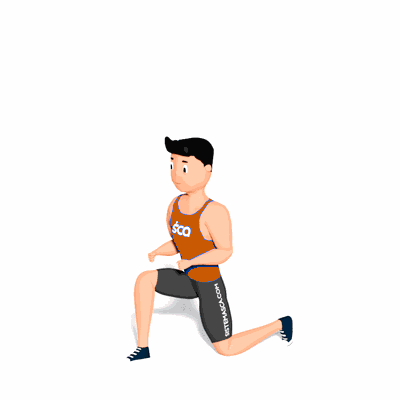

Afundo Alternado com Salto

O exercício trabalha o fortalecimento e hipertrofia dos músculos da perna e também condicionamento cardiorrespiratório. Ele tem um nível de dificuldade grande, sendo recomendado para pessoas com mais experiência e com boa postura.
Ficha Técnica
Tipo: Funcional
Grupo Muscular: Perna
Aparelho: Nenhum
Músculos: Nenhum
Como realizar
- Em pé, tronco reto e pés na largura dos ombros;
- Projete uma das pernas a frente e realize o movimento de afundo, flexionando quadril, joelhos e tornozelos;
- Desça o corpo flexionando o joelho em um ângulo de 90 graus até a coxa ficar em paralelo ao solo;
- O joelho da perna de trás deve chegar próximo ao solo;
- Durante o movimento subida, projete a força nas pernas, impulsionando um salto e, durante a fase aérea, troque a posição das mesmas;
- Na descida realize o movimento de afundo novamente;
- Repita os movimentos alternando a posição das pernas.
 RC STORE
RC STORE